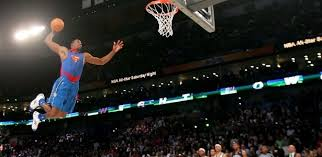
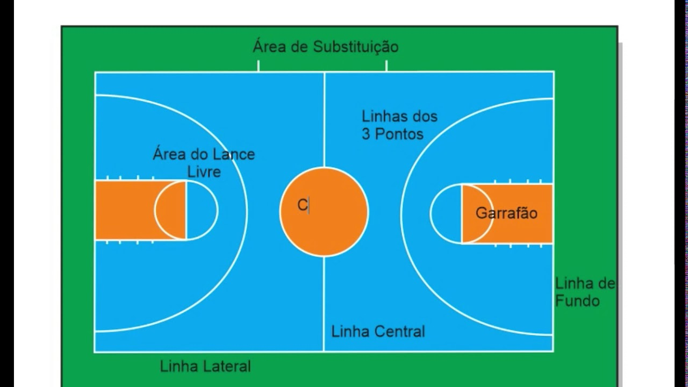

Basquetebol
O Basquetebol é o terceiro esporte mais praticado no mundo.
Objetivo
O objetivo principal do basquetebol é marcar pontos arremessando a bola no cesto do adversário, enquanto se evita que a equipe adversária faça o mesmo no seu próprio cesto. A equipe que marcar mais pontos ao final do jogo é a vencedora. Mais detalhes: Ataque: O objetivo do ataque é driblar, passar, arremessar e, finalmente, acertar a bola no cesto adversário, marcando pontos. Defesa: A defesa visa impedir que a equipe adversária arremesse a bola e marque pontos, além de recuperar a bola para iniciar o ataque. Regras: O jogo é regido por regras específicas que estabelecem como a bola pode ser movida, como os jogadores podem se posicionar e como a partida é interrompida. Vencedor: A equipe que obtiver o maior número de pontos ao final do jogo é declarada a vencedora.

Bola
Uma bola de basquete é um objeto esférico, geralmente feito de couro sintético, borracha ou materiais semelhantes, usado em jogos de basquete. É uma ferramenta essencial para a prática do esporte, permitindo que os jogadores arremessem, driblem e passem a bola. Descrição Detalhada: Forma e Tamanho: A bola de basquete é esférica, com um diâmetro que varia dependendo do nível de jogo e da idade dos jogadores. As bolas oficiais para homens têm uma circunferência de 74,9 cm e um peso de 623 g, enquanto as bolas para mulheres têm 72,3 cm de circunferência e 566 g. Material: As bolas são geralmente feitas de couro sintético ou borracha, que fornecem aderência e durabilidade. Design e Característica: As bolas de basquete geralmente têm um design com 8 gomos, que ajuda na aderência e no controle durante as jogadas. Algumas bolas possuem tecnologias que melhoram a retenção de ar, durabilidade e aderência em diferentes superfícies. Tamanhos e Peso: As bolas de basquete são classificadas por tamanho e peso, como tamanho 7 (masculino) e tamanho 6 (feminino), que influenciam o seu uso em diferentes competições e idades. Cores: As bolas de basquete são normalmente de cor laranja, mas também podem ser encontradas em outras cores.
Quadra
A quadra de basquete é um espaço retangular onde se realiza o jogo, com dimensões específicas de acordo com as regras internacionais da FIBA. A quadra padrão mede 28 metros de comprimento por 15 metros de largura. Elaboração: Dimensões: A quadra de basquete oficial, segundo a FIBA, tem 28 metros de comprimento por 15 metros de largura. Na NBA, a quadra é ligeiramente maior: 28,65 metros de comprimento por 15,24 metros de largura. Linhas e áreas: A quadra possui linhas que demarcam áreas importantes, como a linha de fundo, as linhas laterais, a linha central, a linha de três pontos e a área restritiva (garrafão). Cestas: Em cada extremidade da quadra, há uma cesta suspensa a 3,05 metros do chão, sendo este o alvo para os arremessos. Material: Normalmente, as quadras cobertas são feitas de madeira polida, como bordo, e as quadras ao ar livre são geralmente de concreto ou asfalto.